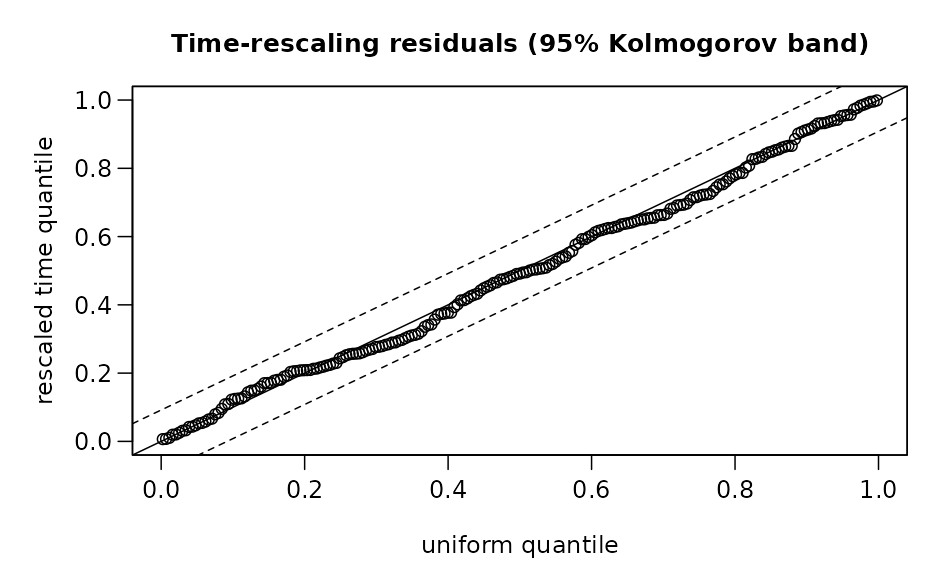
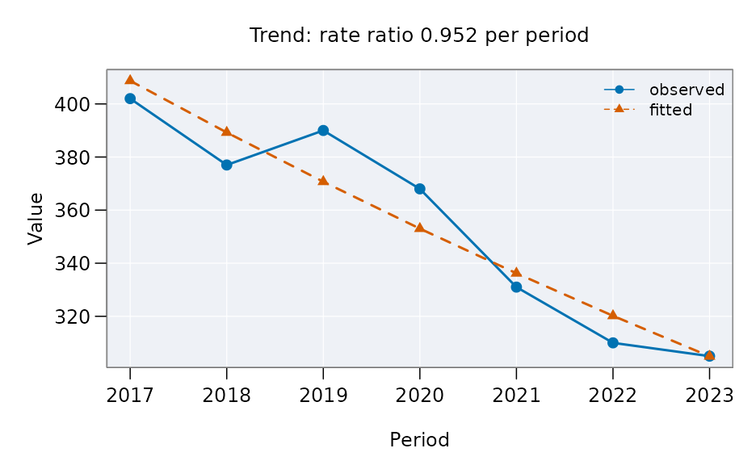
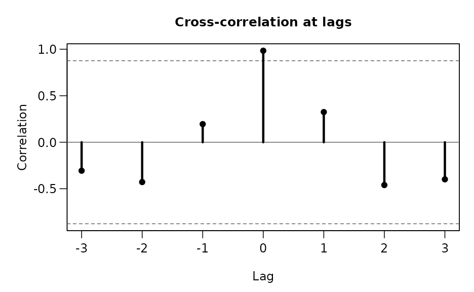
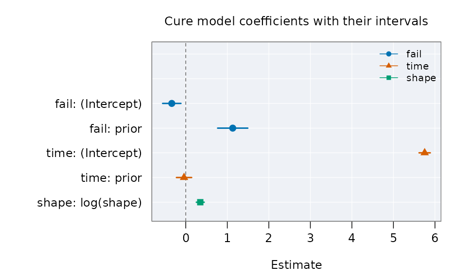
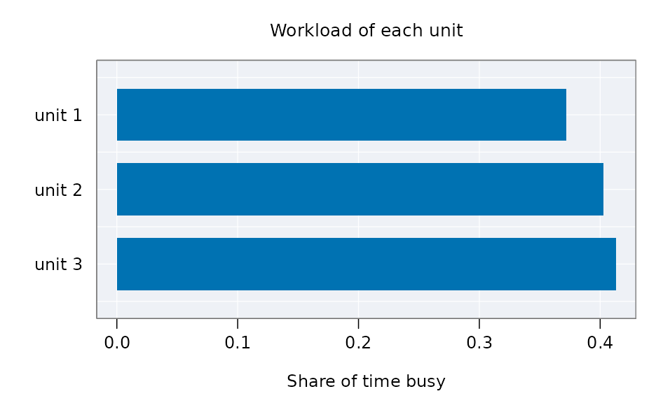
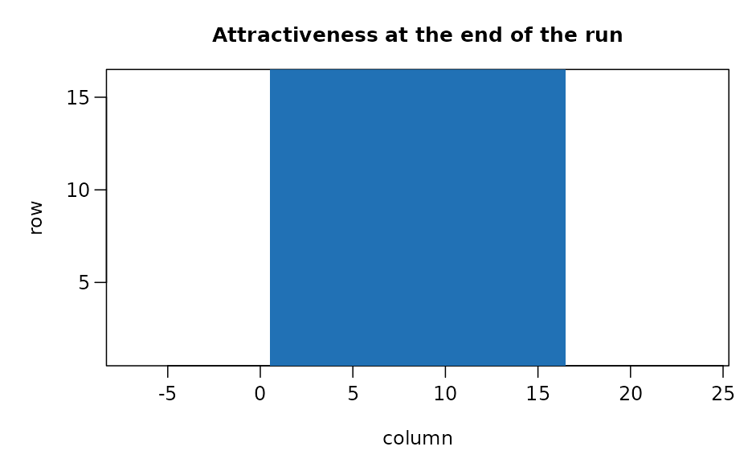

Events in time: contagion, trends and operations
Source:vignettes/time-and-contagion.Rmd
time-and-contagion.RmdSelf-exciting processes, trends, change points, survival, forecasts and the other methods for events in time.
Each section is one help page: what the function is for, the example
of its help page as it runs, and the plot of its result where the
package draws one. ?name gives the arguments and the value
in full.
Time, contagion and operations
Hawkes process: self-exciting event times
hwkfit(): Fits a self-exciting (Hawkes) point process to
event times, such as the times of shootings, burglaries or calls for
service, by maximum likelihood: a background rate and, on top of it, a
rise in the rate after each event that dies away with the time since.
The fitted branching ratio eta is the expected number of
events each event triggers; it says how much of the record is contagion
rather than background.
x <- hwksim(c(a0 = log(0.5), eta = 0.5, beta = 2), 200, seed = 1)
fit <- hwkfit(x$t, 200)
fit
#> hwkfit: 219 events in [0, 200]; exp kernel, const baseline
#> est se
#> a0 -0.3948088 0.13638108
#> eta 0.3874376 0.07837729
#> beta 2.4507950 0.80140193
#> branching ratio 0.3874376, mean cluster size 1.632487; log-likelihood -177.8257, AIC 361.6514
hwkfit(x$t, 200, kernel = c("exp", "lomax"))$cmp
#> kernel base loglik k aic bic eta conv
#> 1 exp const -177.8257 3 361.6514 371.8186 0.3874376 TRUE
#> 2 lomax const -177.8102 4 363.6204 377.1767 0.3948362 TRUEHawkes process: time-rescaling residuals
hwkres(): Transforms event times by the compensator of a
Hawkes process, Lambda(t) = 0^t lambda: under the model the gaps
tau_i = Lambda(t_i) - Lambda(t{i-1}) (with t_0 = 0) are independent
standard exponentials, so u = 1 - exp(-tau) are uniform on
[0, 1]. The Kolmogorov-Smirnov test compares u with the
uniform, with R’s exact p-value below 100 events without ties and the
limiting distribution otherwise, as stats::ks.test() does.
plot() draws the uniform quantile plot with the test’s 95%
band.
x <- hwksim(c(a0 = log(0.5), eta = 0.5, beta = 2), 200, seed = 1)
r <- hwkres(hwkfit(x$t, 200))
r
#> hwkres: 219 rescaled gaps, mean 0.9965042 (1 under the model)
#> Kolmogorov-Smirnov D 0.04543387, p 0.7566163
plot(r)
plot(r)
Hawkes process: simulation
hwksim(): Simulates a Hawkes process on [0, hor] by its
branching construction (Hawkes and Oakes 1974): background events from
the baseline (by thinning for the "cycle" baseline), and
from each event a Poisson number, mean eta, of offspring at
lags drawn from the kernel, and so on over the generations. With
win the process is in space and time: background events
fall uniformly in the rectangle, the baseline is then per unit area, and
each offspring lands at a normal offset (standard deviation
sigma) from its parent; offspring outside the window or
past hor are not recorded and have no offspring of their
own.
hwksim(c(a0 = log(0.2), eta = 0.6, beta = 1), 50, seed = 2)
#> t gen
#> 1 3.779322 0
#> 2 5.409217 0
#> 3 5.830663 1
#> 4 19.823215 0
#> 5 41.169353 0
#> 6 43.814177 0
#> 7 47.958169 0
hwksim(c(a0 = log(0.01), eta = 0.5, beta = 1), 50,
win = c(0, 10, 0, 10), sigma = 0.5, seed = 2)
#> t x y gen
#> 1 0.7558644 2.7817962 9.44022175 0
#> 2 5.0250919 4.1078544 5.63426436 0
#> 3 5.6439173 7.9226136 8.71437679 0
#> 4 5.8455903 4.3860809 2.51810339 0
#> 5 6.2600360 2.5425145 3.53493812 0
#> 6 6.2795482 3.8141362 3.00022453 1
#> 7 6.6432253 5.2072984 6.15998044 0
#> 8 6.7455495 3.2657857 2.31626277 2
#> 9 6.8278771 2.4776334 3.29482576 1
#> 10 6.9425536 5.5879856 6.95949979 1
#> 11 6.9822829 6.0630669 6.86957430 2
#> 12 7.1181333 5.2380366 6.99909144 2
#> 13 7.3132013 2.1007573 3.96759684 2
#> 14 7.5838953 6.0267515 6.38383203 3
#> 15 7.6171488 0.2010294 7.68373046 0
#> 16 7.8070600 2.3098969 3.22328722 2
#> 17 7.9725648 4.3991280 8.65889161 0
#> 18 8.4336242 2.4998831 1.23978171 0
#> 19 8.7651830 3.0451196 1.92151322 0
#> 20 9.5973703 3.0282385 2.08734045 1
#> 21 9.9788630 2.7943792 1.72271002 2
#> 22 10.2815589 2.3280140 2.00603858 1
#> 23 10.5906681 9.8982000 6.65449348 0
#> 24 13.2249343 4.8022337 6.35120197 0
#> 25 13.7762147 9.3813953 9.86344192 0
#> 26 16.4964749 7.4380201 3.08627689 0
#> 27 19.4665738 3.6378755 1.11373616 0
#> 28 21.4640228 0.1711280 9.44328030 0
#> 29 21.7501895 1.7312635 2.79493744 0
#> 30 23.3361286 5.8550391 2.04369776 0
#> 31 23.3930484 3.6732670 2.49637951 0
#> 32 23.3997964 3.0788325 2.26006603 1
#> 33 24.8991851 6.2916273 4.93009234 0
#> 34 25.7717035 6.0225505 0.87353454 0
#> 35 26.2174343 5.3501118 0.04506395 1
#> 36 27.1796741 2.8546811 7.53480398 0
#> 37 27.2687672 3.1381133 7.94929237 1
#> 38 27.5287415 5.4643075 2.53895429 0
#> 39 27.8868844 3.5697834 7.94786103 2
#> 40 28.0487951 0.7400589 9.82128435 0
#> 41 28.1332378 0.8370355 9.73453659 1
#> 42 28.1346901 3.2400848 7.69178375 2
#> 43 28.4063694 3.3726705 6.98303480 2
#> 44 28.4593287 2.4103222 7.10749793 1
#> 45 28.5613906 4.8372020 5.57398610 0
#> 46 29.2513541 5.3811953 4.92634279 0
#> 47 29.3118715 2.1577357 6.90245744 2
#> 48 29.7729072 8.9359034 6.66480829 0
#> 49 29.8214111 0.4276242 0.46665971 0
#> 50 30.0611117 7.8460784 3.66011738 0
#> 51 30.2281297 9.2622706 6.80716938 1
#> 52 30.8340483 0.5566726 0.24743524 1
#> 53 30.8766715 0.8165569 0.40163501 2
#> 54 31.2352188 5.7934013 8.17072591 0
#> 55 31.2354094 9.7051802 6.81376968 0
#> 56 31.3940936 1.2732222 0.60715997 3
#> 57 31.4649534 5.6895603 8.03720520 1
#> 58 31.5320979 1.7367810 3.56895007 0
#> 59 31.8004552 3.7444842 3.14122021 0
#> 60 32.1840270 3.6770851 3.23390385 1
#> 61 32.2146054 3.4482675 2.74369493 2
#> 62 32.9851182 9.8808796 7.55774944 0
#> 63 34.7650142 7.9132115 1.54451736 0
#> 64 36.1191620 0.3849985 2.14207087 0
#> 65 37.2177942 3.9058574 8.06508471 0
#> 66 37.3812730 7.2581543 8.14312801 0
#> 67 37.9381993 8.0282612 7.85203250 1
#> 68 40.5743322 8.4680500 9.83591484 0
#> 69 41.6675908 0.7652759 0.62137742 0
#> 70 42.9158813 5.7905562 6.62290269 0
#> 71 44.0135007 2.8361013 3.24418025 0
#> 72 44.7267301 5.8962074 4.27983436 0
#> 73 45.1094756 8.9836127 8.42937211 0
#> 74 45.5569744 9.3018814 4.29741470 0
#> 75 46.1837316 3.1484411 3.34648292 0
#> 76 46.2307686 4.0845319 3.52856534 1
#> 77 46.3697213 5.7224492 8.52444086 0
#> 78 46.4604868 6.1189641 8.06749945 1
#> 79 46.7984921 5.5727714 8.62358994 1
#> 80 46.9345880 8.8856033 8.02889160 0
#> 81 47.4210017 3.5381063 4.88175888 0
#> 82 47.8285310 5.3805381 8.57126602 2
#> 83 48.2430301 4.2879965 5.08231324 0
#> 84 48.3392036 5.5440290 3.58823525 1
#> 85 48.6693339 3.5373848 5.51006011 0
#> 86 49.3792075 2.4273647 6.14111389 0
#> 87 49.3883882 6.0146442 3.40040331 2Trend in a series: rate ratio, Mann-Kendall and Theil-Sen
trndrr(): Measures the trend in a short series of counts
(admissions, incidents or placements per year) three ways. The Poisson
log-linear model mu_t = b_0 + b_1 (x_t - x) + e_t gives the rate ratio
per unit of x, exp(b1) (0.85: a fall of 15% a
period), with the exposure expo as offset so that the trend
is in the rate; when the Pearson dispersion (over n - 2) is
above 1.5 the interval and p-value are the quasi-Poisson ones (standard
error times the square root of the dispersion, the t distribution on
n - 2 degrees of freedom). The fit takes the steps of
stats::glm(). Mann-Kendall’s rank test and the Theil-Sen
slope (the median of the pairwise slopes, with Sen’s distribution-free
interval) make no distributional assumption; the p-value is exact over
every ordering of the observed values up to 8 periods (ties kept) and
normal with the tie and continuity corrections beyond. Negating the
series negates S, so rises and falls are treated alike
(proof("trndrr")). yoy holds the change on the
period before, and with seas the totals by season are
tested for equality (chi-square). Given the counts of one cycle with
each season once (incidents by month of the year, by day of the week or
by hour of the day), that test is the one that the counts are spread
evenly over the cycle, as chisq.test(y).
y <- c(402, 377, 390, 368, 331, 310, 305)
trndrr(y, 2017:2023)
#> trndrr: 7 periods
#> rate ratio per period 0.9523448 (95% 0.9337437 to 0.9713165), p 1.223921e-06
#> Mann-Kendall S -19, p 0.002777778; Theil-Sen slope -17.75
# a rate: counts over a growing population
trndrr(c(20, 25, 30, 33), expo = c(1000, 1500, 2500, 2600))$rr
#> rr lo hi p b se disp over
#> 1 0.8494552 0.7109716 1.014913 0.07234571 -0.1631601 0.09079901 0.4268193 FALSE
# equal totals by quarter?
trndrr(c(5, 9, 7, 4, 6, 10, 8, 5), seas = rep(1:4, 2))$seas
#> $tab
#> season n expd
#> 1 1 11 13.5
#> 2 2 19 13.5
#> 3 3 15 13.5
#> 4 4 9 13.5
#>
#> $stat
#> [1] 4.37037
#>
#> $df
#> [1] 3
#>
#> $p
#> [1] 0.2241485
Change point: a step in a series and Pettitt’s test
stpcp(): Asks whether a series moved to a new level, and
where. The step scan takes every split after period k with
at least minseg periods on each side, and the largest
between-segment sum of squares T_k = k (n - k) / n (y_a - y_b)^2; its
p-value comes from the same maximum over reorderings of the series
(every ordering when n! is at most nperm, giving an exact
p-value; otherwise nperm random ones, (1 + #{T* >= T}) /
(1 + nperm)), so it is a test of a step anywhere, not of the best split
alone. Pettitt’s rank test takes the split with the largest |U_t|, U_t =
sum_{i <= t < j} sign(y_j - y_i), with its approximate p-value 2
(-6 K^2 / (n^3 + n^2)). Both assume exchangeable periods under no
change: a steady trend can read as a step.
stpcp(c(100, 104, 98, 60, 63, 58), x = 2018:2023)
#> stpcp: 6 periods; step p-value exact over 720 orderings
#> test k before after stat p at
#> step 3 100.6667 60.33333 2440.167 0.1000000 2020
#> pettitt 3 100.6667 60.33333 9.000 0.2907114 2020
stpcp(c(100, 104, 98, 101, 97, 60, 63, 58, 61, 59), nperm = 999, seed = 1)
#> stpcp: 10 periods; step p-value from 999 orderings
#> test k before after stat p
#> step 5 100 60.2 3960.1 0.0100000
#> pettitt 5 100 60.2 25.0 0.0661425CUSUM surveillance of counts
cusrv(): Watches a series of counts for a rise above
what is expected: the cumulative sum s_t = (0, s_{t-1} + z_t - k) of the
standardised excess z_t raises an alarm where s_t >= h. The expected
counts are given (expd), or are the mean of the counts
before start, the first period watched. z is
(y - m) / sqrt(m) ("std"), Rossi’s transform
(y - 3 m + 2 sqrt(y m)) / (2 sqrt(m)) ("rossi"), Anscombe’s
1.5 (y^(2/3) - m^(2/3)) / m^(1/6) ("anscombe")
or the count itself ("none", for k and
h on the count scale). With reset the sum
starts again from 0 after an alarm.
y <- c(10, 12, 9, 11, 10, 13, 19, 22, 25, 12)
cusrv(y, start = 6)
#> i y expd z s alarm
#> 1 6 13 10.4 0.8062258 0.000000 FALSE
#> 2 7 19 10.4 2.6667468 1.626747 FALSE
#> 3 8 22 10.4 3.5970073 4.183754 TRUE
#> 4 9 25 10.4 4.5272678 7.671022 TRUE
#> 5 10 12 10.4 0.4961389 7.127161 TRUE
cusrv(y, expd = rep(11, 10), trans = "rossi", reset = TRUE)
#> i y expd z s alarm
#> 1 1 10 11 -0.3051028 0.000000 FALSE
#> 2 2 12 11 0.2982325 0.000000 FALSE
#> 3 3 9 11 -0.6181361 0.000000 FALSE
#> 4 4 11 11 0.0000000 0.000000 FALSE
#> 5 5 10 11 -0.3051028 0.000000 FALSE
#> 6 6 13 11 0.5904378 0.000000 FALSE
#> 7 7 19 11 2.2483195 1.208320 FALSE
#> 8 8 22 11 3.0321034 3.200423 TRUE
#> 9 9 25 11 3.7939546 2.753955 TRUE
#> 10 10 12 11 0.2982325 0.000000 FALSECorrelation of two series, at lags
xcser(): Correlates two series period by period:
Pearson’s r with Fisher’s interval and the t-test p-value of
stats::cor.test(), and the cross-correlations at lags -K..K
as stats::ccf() estimates them (lag k is the
correlation of x[t + k] with y[t]; the default
K is ccf()’s, floor(10 log10(n / 2))). Two
named series are matched by name (the periods both have, in the order of
x), so counts from two sources for the same years line up
whatever years each covers. With dif the changes from one
period to the next are correlated instead of the levels: two series that
both trend correlate in level whether or not they move together. Every
correlation lies in [-1, 1] (Cauchy-Schwarz,
proof("xcser")).
a <- c("2019" = 120, "2020" = 98, "2021" = 105, "2022" = 130, "2023" = 141)
b <- c("2018" = 50, "2019" = 61, "2020" = 44, "2021" = 52, "2022" = 66,
"2023" = 70)
xcser(a, b)
#> xcser: 5 periods; r 0.9840288 (95% 0.7719537 to 0.9989935), p 0.002417117
#> lag r
#> -3 -0.3061542
#> -2 -0.4281115
#> -1 0.1949278
#> 0 0.9840288
#> 1 0.3245041
#> 2 -0.4603044
#> 3 -0.3987087
xcser(a, b, dif = TRUE)$cor
#> r lo hi p n
#> 1 0.9734683 0.1922192 0.9994666 0.02653166 4
Kaplan-Meier survival and recurrence
kmrec(): Estimates the share still without an event at
each time since the start (release, placement, a case opening, the last
incident at a place) by Kaplan-Meier, by group, with Greenwood’s
standard error and the log-scale interval of
survival::survfit() (its default), each group’s median
(where the curve sits at exactly 1/2, halfway to its next fall, as
survfit() does), and the log-rank test between groups
(survival::survdiff()). Each product step is a factor in
[0, 1], so the curve starts at most 1 and never rises
(proof("kmrec")).
kmrec(c(3, 8, 8, 12, 20, 24), event = c(1, 1, 0, 1, 0, 1),
grp = c("a", "a", "a", "b", "b", "b"))
#> kmrec: 6 durations
#> grp n events median
#> a 3 2 8
#> b 3 2 24
#> log-rank chi-square 2.469388 on 1 df, p 0.1160831
# repeat incidents at three places, watched to day 100
kmrec(c(2, 9, 30, 5, 70, 11, 12, 13),
unit = rep(c("p", "q", "r"), c(3, 2, 3)), end = 100)$med
#> grp n events median
#> 1 all 8 5 43
res <- kmrec(c(3, 8, 8, 12, 20, 24), event = c(1, 1, 0, 1, 0, 1),
grp = c("a", "a", "a", "b", "b", "b"))
plot(res)
Split-population (cure) model of recidivism
spcure(): Asks two questions that an ordinary survival
model runs together: what share of people released will ever be
reconvicted, and how soon those who are reconvicted fail. A Kaplan-Meier
curve of time to reconviction levels off well above 0: many released
people never fail, however long they are followed. Schmidt and Witte
(1989) model this with a split population: each person would eventually
fail with chance delta = 1 / (1 + exp(-x’gamma)) (the
"fail" part), and the time to failure of those who would
fail follows a distribution with scale exp(x’beta) (the
"time" part): a Weibull with a common shape, an
exponential, or a lognormal (log time normal with mean x’beta and a
common standard deviation sigma). A person followed to time
t without failing contributes 1 - delta + delta S(t), one
who failed at t contributes delta f(t). The parameters are
estimated by maximum likelihood (quasi-Newton steps with the analytic
gradient) with standard errors from the inverse of the Hessian.
set.seed(10)
n <- 600
prior <- rbinom(n, 1, 0.4)
fail <- rbinom(n, 1, plogis(-0.5 + 1.2 * prior))
tt <- ifelse(fail == 1, rweibull(n, 1.3, 300), Inf)
cens <- runif(n, 365, 1500)
r <- spcure(pmin(tt, cens), as.numeric(tt <= cens), data.frame(prior))
r
#> spcure: 600 people, weibull times; share who would ever fail 0.5268; log-likelihood -2343.2
#> part term est se lo hi z p
#> fail (Intercept) -0.3366152 0.11268803 -0.5574797 -0.1157507 -2.9871424 2.815985e-03
#> fail prior 1.1306239 0.18545011 0.7671484 1.4940995 6.0966475 1.083160e-09
#> time (Intercept) 5.7522378 0.06907445 5.6168543 5.8876212 83.2759080 0.000000e+00
#> time prior -0.0414838 0.09364132 -0.2250174 0.1420498 -0.4430074 6.577604e-01
#> shape log(shape) 0.3494171 0.04854205 0.2542765 0.4445578 7.1982364 6.099631e-13
plot(r)
Hypercube queue of patrol units
hypq(): Larson’s hypercube model of patrol cars: calls
arrive from each atom (beat, reporting area) at rate lam
and go to the first free unit in the atom’s order of preference; each
unit serves at rate mu. The state is the set of busy units,
2^n states for n units, and the stationary distribution is
found exactly. From it come each unit’s workload (the share of time
busy), the share of calls each unit answers from each atom, the
probability that every unit is busy (a lost call, or with
queue = "wait" a call that waits; Larson’s infinite-line
model, the queue lumped into the all-busy state), the mean queue and
wait, and with travel times the mean response travel time. Whatever the
orders, the number of busy units follows Erlang’s loss or delay system.
The noisy-OR chance that patrols detect an event is
nordet().
pref <- rbind(c(1, 2, 3), c(2, 1, 3), c(3, 2, 1), c(3, 1, 2))
tt <- matrix(c(2, 5, 8, 6, 3, 7, 9, 6, 2, 7, 8, 3), 3)
hypq(c(0.4, 0.7, 0.3, 0.6), pref, mu = 1.5, tt = tt)
#> hypq: 3 units, rho 0.4444444; P(all busy) 0.109215
#> workloads: 0.3722186 0.4025169 0.4129779
#> mean travel time 3.944009
Square-root law of response distance
sqrtlw(): Kolesar and Blum’s square-root law: with
available units spread like a random (Poisson) pattern over a region of
area area, the mean distance from a call to the nearest
available unit is c sqrt{A / (u (1 - b))} for units u of
which a share busy b is busy; c = 1/2 in straight lines and
sqrt{2 pi} / 4 on a rectangular street grid. Quadrupling the units
halves the distance and scaling area and units together leaves it
unchanged (proof("sqrtlw")). The busy share can come from
hypq()’s workloads.
Hot-spot dynamics: the Short-D’Orsogna-Brantingham model
sdbsim(): Simulates the model of residential burglary of
Short et al. (2008) on an n by n grid of
houses that wraps at its edges. Each site has an attractiveness
a0 + b; b rises by theta with
every burglary there, spreads to the four neighbours at rate
eta and decays at rate omega, so that
burglaries draw further burglaries (repeat and near-repeat
victimisation). In the "agent" model offenders
(rho, whole numbers per site) burgle with probability 1 -
e^{-(a_0 + b) dt} and leave, or else move to a neighbouring site chosen
in proportion to its attractiveness; new offenders arrive at
gam per site per unit time. In the "pde" model
the densities follow the continuum limit, b_t = (eta D / z) Delta b -
omega b + epsilon D rho A and rho_t = (D / z)(Delta rho - 2 (rho A / A))
- rho A + gamma with A = a_0 + b, by explicit Euler steps on a grid of
spacing dx; sup marks sites where policing
suppresses crime (no burglaries there). The step must satisfy dt <= z
dx^2 / (4 dif max(1, eta)).
s <- sdbsim(20, 50, a0 = 1 / 30, omega = 1 / 15, eta = 0.03,
gam = 0.02, theta = 0.5, seed = 1)
s
#> sdbsim: agent model, 20 x 20 grid, 50 steps; burglaries 392; mean attractiveness at the end 0.1493598
p <- sdbsim(16, 200, mode = "pde", eps = 2, dt = 0.05,
rho = matrix(0.07, 16, 16))
range(p$b)
#> [1] 0.05691214 0.05691214
plot(p)
#> Warning in contour.default(x, y, z, add = TRUE, drawlabels = FALSE, col = "#636363", :
#> all z values are equal
Hot-spot threshold of the Short-D’Orsogna-Brantingham model
sdbthr(): The continuum model of sdbsim()
has one uniform steady state, b = epsilon D gamma / omega, A = a_0 + b,
= gamma / A. Linearised about it, a disturbance of wavenumber-squared k
evolves by a 2 by 2 matrix whose trace is negative at every k and whose
determinant is P k^2 - Q k + R, R = omega A > 0: a mode grows exactly
when the determinant is negative. So hot spots form when Q > 0, that
is 3 epsilon D > omega + eta A (repeat victimisation outweighs decay
and spreading), and Q^2 > 4 P R; the fastest-growing mode is near k^*
= Q / (2 P). Without reinforcement (eps = 0) the uniform
state is stable at every wavelength (proof("sdbthr")).
z places the lattice’s neighbour count on both diffusion
terms, as sdbsim() does (z = 1 is the
continuum form).
ETAS: a self-exciting process with marks and the Omori law
etasf(): Fits the temporal epidemic-type aftershock
sequence (ETAS) model of Ogata (1988) to event times with marks (a
magnitude, the number of victims, the severity of an incident):
x <- hwksim(c(log(0.3), 0.5, 0.6, 1), 800, kernel = "lomax", seed = 5)
etasf(x$t, 800)
#> etasf: 530 events in [0, 800]; no marks, alpha fixed at 0
#> est se
#> mu 0.3327782 0.08931391
#> k 0.4373506 0.87721720
#> alpha 0.0000000 NA
#> c 1.3824477 1.65692065
#> p 1.6791760 0.82290541
#> branching ratio 0.5167995; log-likelihood -724.0694, AIC 1456.139Multivariate Hawkes process: types that excite each other
mvhwk(): Fits a multivariate Hawkes process with
exponential kernels to event times of several types (offence types,
gangs, areas):
a <- hwksim(c(log(0.3), 0.3, 1), 400, seed = 1)
b <- hwksim(c(log(0.2), 0.4, 1), 400, seed = 2)
d <- rbind(data.frame(t = a$t, type = "a"), data.frame(t = b$t, type = "b"))
d <- d[order(d$t), ]
mvhwk(d$t, d$type, 400)
#> mvhwk: 302 events of 2 types; beta 0.9417787, spectral radius 0.2974369
#> background rates:
#> a b
#> 0.3202407 0.2003798
#> excitation (row: triggered, column: triggering):
#> a b
#> a 2.794820e-01 0.06558192
#> b 5.088176e-09 0.29743689Space-time Hawkes process
sthwk(): Fits the self-exciting point process of crime
in space and time of Mohler et al. (2011):
s <- hwksim(c(log(0.02), 0.5, 1), 100, win = c(0, 10, 0, 10),
sigma = 0.3, seed = 3)
f <- sthwk(s$t, s$x, s$y, 100, win = c(0, 10, 0, 10))
f
#> sthwk: 343 events in [0, 100] over an area of 100
#> est se
#> mu 0.01908445 0.001555915
#> eta 0.45225241 0.042523094
#> beta 0.95205502 0.114791215
#> sigma 0.29276704 0.021369007
#> log-likelihood -1288.096
sthwk(s$t, s$x, s$y, 100, win = c(0, 10, 0, 10), par = f$par,
at = data.frame(t = 50, x = 5, y = 5))$lam
#> [1] 0.01938062Aoristic weights
aorwt(): Spreads each event known only to have happened
in an interval [from, to) with uniform density over that interval and
counts each instant in the bin of its local clock time (Ratcliffe 2002):
with the defaults, the 168 hours of the week from Sunday 00:00. A change
of clock (daylight saving) moves the remaining time to the right hours:
skipped hours get nothing and a repeated hour gets both. Missing values
follow stated rules: an event with no from is left out;
with no to, a reversed interval or one shorter than
lo seconds, its whole weight goes to the start’s bin; one
of at least hi seconds is spread evenly over all bins.
f <- as.POSIXct(c("2024-03-04 22:00", "2024-03-05 09:30"), tz = "UTC")
t <- as.POSIXct(c("2024-03-05 02:00", "2024-03-05 10:30"), tz = "UTC")
a <- aorwt(f, t, bw = 3600, nb = 24, origin = 0)
a$tot
#> [1] 0.25 0.25 0.00 0.00 0.00 0.00 0.00 0.00 0.00 0.50 0.50 0.00 0.00 0.00 0.00 0.00
#> [17] 0.00 0.00 0.00 0.00 0.00 0.00 0.25 0.25Counts over time and across categories
ARIMA(1,1,1) forecast of a count series
arimfc(): Fits ARIMA(1,1,1) to a series of counts
(monthly incidents, calls for service, admissions) by exact maximum
likelihood, the Kalman filter on the state-space form with the
conditional-sum-of-squares fit as its start, as
stats::arima() does by default, and forecasts
h periods ahead with their standard errors. AIC is -2 L +
2(k + 1); BIC is + (k + 1)(n - 2), k the ARMA coefficients.
Seasonal ARIMA forecast with a hold-out check
sarfc(): Fits SARIMA(p,d,q)(P,D,Q)_s (by the method of
arimfc()) to all but the last h values of a
count series, forecasts those h, and scores the forecasts
against them: the mean absolute percentage error (each error over the
larger of the count and 1) and the root mean square error. The model
must difference the series once at least (order[2] or
seasonal[2] above 0), so it has no mean.
Ornstein-Uhlenbeck (Langevin) fit and simulation of a count series
ousim(): Treats a daily count series as a noisy
mean-reverting intensity, dX_t = theta (mu - X_t) dt + sigma dW_t:
theta, mu and sigma from the least-squares regression of the first
differences on the lagged values (theta = -b, at least 10^{-6}, mu =
-a/b, sigma the residual standard deviation), then npath
Euler-Maruyama paths of days / dt steps from the last
value. Draws come from seed, as set.seed()
takes it.
Fokker-Planck evolution of a count density
fpdens(): The density of the Ornstein-Uhlenbeck process
fitted as in ousim(), evolved by the Fokker-Planck equation
_t p = -_x (theta (mu - x) p) + sigma^2 _x^2 p, here with the drift
taken outside the derivative as in the explicit scheme used: central
differences on ngrid points from 0 to 1.5 times the largest
count plus 1, nstep steps of 0.05, edges copied from their
neighbours, the density kept non-negative and of total 1. It starts as a
normal curve at the last count with standard deviation sigma + 1. The
stationary variance is sigma^2 / (2 theta).
Lotka-Volterra rates of a yearly count series
lvfit(): Treats yearly counts as the prey x(t) and their
three-year trailing mean as a stand-in predator y(t) (an enforcement
series can take its place) in x = alpha x - beta x y, y = delta x y -
gamma y: alpha is the median log growth of x plus 0.05, gamma minus the
median log growth of y plus 0.05, beta = alpha / (y), delta = gamma /
(x), and the linearised cycle has period 2pi / sqrt{alphagamma}
(D’Orsogna and Perc 2015, section 3.4). The rates describe the series;
they are not a fitted dynamical model.
Correlation of counts per unit between categories
catcor(): Counts the events of each category (offence
type, call type) by unit (neighbourhood, beat, district), over the union
of the units with a 0 where a category has none, and gives the Pearson
correlations of those counts between every pair of categories: whether
the same places score high on both.
# simulated events of three categories in 20 areas
set.seed(1)
a <- sprintf("%02d", 1:20)
u <- list(theft = sample(a, 200, TRUE), assault = sample(a, 80, TRUE),
fraud = sample(a, 50, TRUE))
catcor(u)$r
#> assault fraud theft
#> assault 1.00000000 -0.39207576 0.06201737
#> fraud -0.39207576 1.00000000 -0.05721296
#> theft 0.06201737 -0.05721296 1.00000000